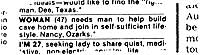
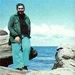
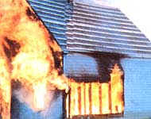
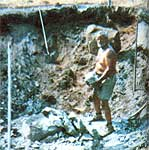
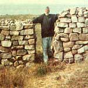
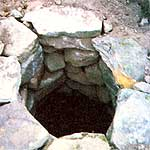
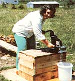
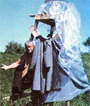

Report From Them That's Doin'
Nancy and Carlson have set out to prove the adage that you're . . .
I received over 35 replies to the Lifemates & Companions advertisement that I placed in MOTHER'S May/June 1978 issue, but I sensed-from the moment I read his letter-that the man who closed his note with the words "Healthy, handsome, and all systems go! " just might be the one for me.
Sure enough, that fellow-Gus Carlson-and I were married just two months later, on July 29. And ever since we met, we've been preparing for our big move back to the land. We're not spring chickens (Gus is approaching 62 and I'm now 49), and neither one of us has homesteaded before . . . but, as far as we're both concerned, you're never too old to change!
Actually-the way we look at it-there're some advantages to being "well seasoned" before you make the jump to a self-sufficient country lifestyle. For one thing, any children you may have raised will have grown up and gone off on their own . . . and-for another-many older folks have saved up a bit more capital than young couples just starting out (or will receive some form of retirement income). So my husband and I think that as long as a person is healthy and not afraid of hard work, being a bit "experienced" is actually beneficial to the would-be homesteader!
To tell the truth, we can't wait for Gus's next birthday . . . when he can retire (he's currently chief electrician at the Woods Hole Oceanographic Institution in Massachusetts), and we'll be able to make a permanent move to our recently purchased, isolated, 80-acre island homestead in the Canadian Maritimes.
For now, though, we're busily making plans and preparations for the big day.
One of our first tasks has been assembling the equipment for the homemade wind-plant that will power our homestead's water pump, small refrigerator, and two or three ventilation fans (we don't plan to use electricity for anything else). Gus has already scrounged so many useful parts that the completed wind catcher will cost only a couple of hundred dollars!
We're also designing our house. The modified A-frame will have lots of double-paned glass on the south side and be built partially underground on the north side ( we compromised on the "cave" concept that I'd mentioned in my P & S ad). And we'll use a woodstove both for cooking and for supplementing the sun-collected heat that dwelling will provide.
Fortunately, not all our work toward our island homestead has been "hands off" planning and scrounging. Last summer, Gus took a two-month leave of absence from his job, allowing the two of us to spend July and August breaking ground on a few of our on-site projects.
Our first job was cleaning out an old well. We spent hours-removing rusted tin cans, old auto parts, broken toys, and other discarded trash-before we were able to tell whether the venerable waterholder contained any liquid at all!
When we did reach some water, Gus built a ladder and descended into the well's icy wetness. There he piled up bucket load after bucket load of still more rubbish . . . which I hauled out-from above-with a rope. Three days later, the hole had been cleared of trash. We then pumped out the liquid, disinfected the well's sides, and pumped some more until-at last-we had clean, beautiful drinking water. Gus finished the job by rebuilding the well's stone rim and adding a wooden cover for the hand pump.
Our next big chore was tearing down an old house that stood on the property. We had originally hoped to recycle much material from the timeworn structure. It turned out, though, that-except for a few doors, windows, boards, and the aluminum roofing-the shack wasn't worth salvaging. So we simply waited for a soggy day with a gentle seaward breeze and burned the stripped-down building to the ground.
Gus then tackled the brutal task of clearing out the massive boulders that had made up the home's foundation. He single-handedly broke every rock into movable chunks with a sledge hammer, lugged all the hefty fragments out of the excavation, and then stacked the stones aside for future use. (My never-tiring spouse lost 24 pounds during our two-month stay . . . and no doubt most of the "vanished" weight ended up as a pool of sweat at the bottom of that foundation pit!)
We worked on several other projects during our brief Canadian sojourn, as well. Gus laid the "rescued" aluminum roofing on top of an old barn on our land, and then went on to cut three cords of spruce firewood. We made a simple solar shower out of a black-painted and wooden-plugged washtub that was set on an elevated stand (the heated water felt great!). And-for our anniversary-my beloved built a beautiful new outhouse from salvaged boards (how's that for an unusual present!).
While the work was going on, we lived in a tent and cooked our meals over an open fire. Since we had no refrigeration on our island, our menus were mostly made up of dried and canned goods . . . fare that soon grew pretty tiresome. We also had to endure a three-week rainy spell that kept us both so continually damp we practically sprouted fins. Still, the peace and beauty of our homestead, our enthusiasm for our future plans, and our mutual sense of humor kept us going . . . and-instead of being gloomy-we were gloriously happy!
This summer, we'll return to our island to stay. I'll manage a good-sized vegetable garden as well as assist Gus in the construction of our permanent home (we have to get the outside completed so we can move in before winter). The work will be even harder than it was last year, yet we can't wait to get started. (After all, Helen and Scott Nearing were roughly our ages when they moved to and revived their Maine farm. So, like that tireless couple, we aim to keep going and working until we're in our 70's and 90's.)
And if our first summer's labor is any indication, homesteading will certainly be right for the two of us. I shed 10 pounds in that short time span. And Gus not only lost weight, but his blood pressure-which had been high for years-came down to a level that would be normal for an 18-year-old! When our diet includes all our fresh homegrown produce, I know that we'll get healthier still!
No, Gus and I certainly don't feel that we're too old to change. If anything, we feel as if we're getting younger every day!
|
 A scenic outlook from the Carlsons' island. |
 The couple burned the unusable remains of their homestead's old dwelling . . |
 then Gus cleared out the foundation for their future home. |
|
 The stones Gus salvaged. |
 The well was cleaned, restored, and . . . |
 fitted with a hand pump assembly. |
|
 ""Hey, hon! Where's the towel?"" |
 |
|